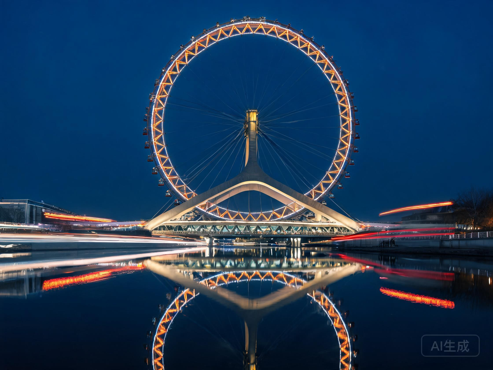
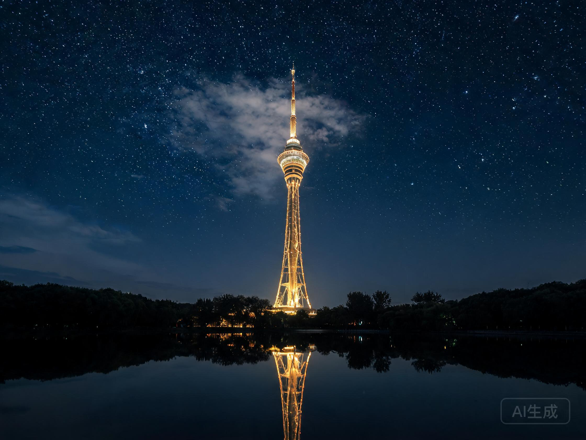
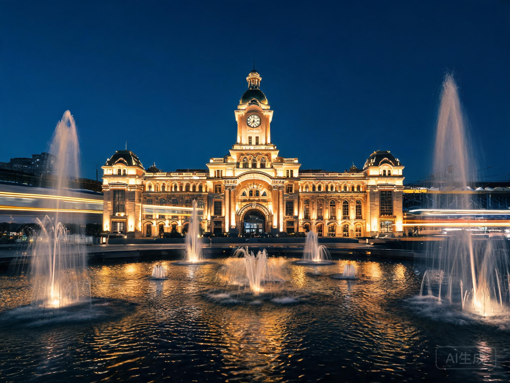
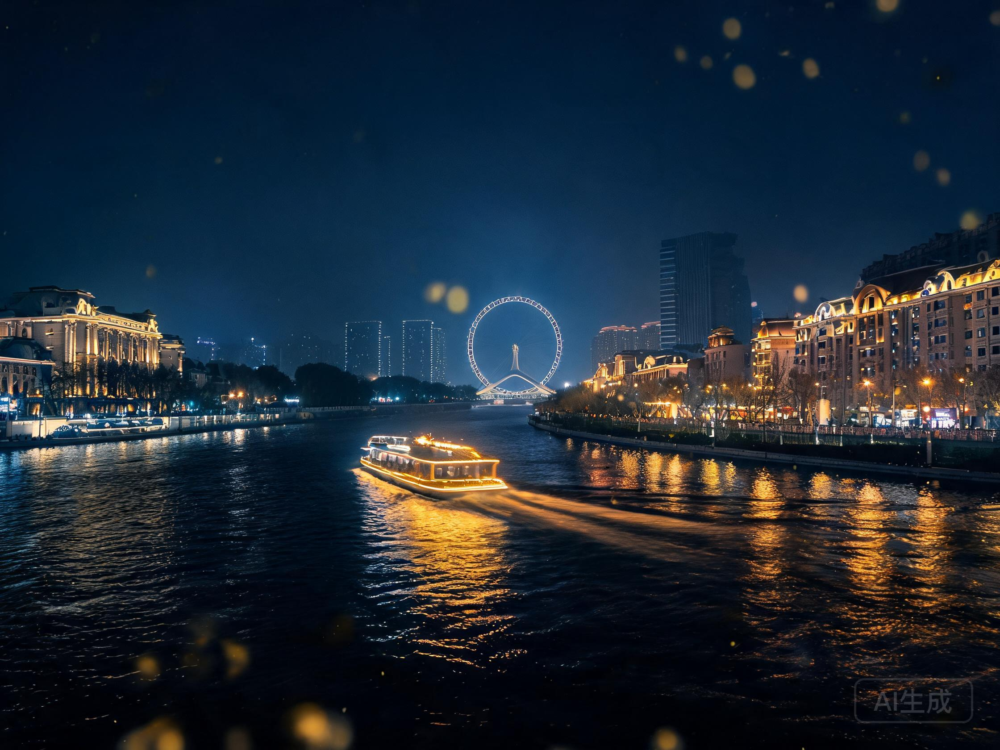

永乐桥摩天轮，2009年建成。世界唯一一座架在桥上的摩天轮，兼具观光与交通功能。海河之上，120米高空俯瞰津门夜色。
世界唯一桥上摩天轮
天津广播电视塔，高415.2米，建成时为亚洲之最。矗立于水中，"天塔旋云"为津门十景之一，开启天津广播电视无线覆盖新纪元。
津门十景 · 水中之塔
始建于清光绪十二年（1886年），初名老龙头火车站。2008年伴随中国首条时速350公里高铁——京津城际开通运营，百年老站焕发新生。
百年老站 · 京津门户
海河游船起步于1985年，天津母亲河两岸风光旖旎。乘船夜游，西洋建筑与霓虹倒影交相辉映，是津门独具特色的夜游体验。
母亲河 · 夜韵流光